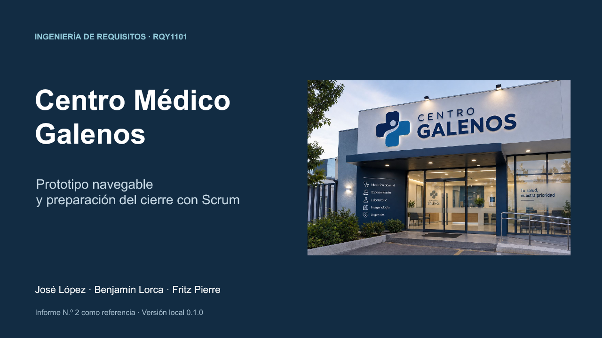

Presentación del proyecto
Recorre las doce diapositivas y prepara la exposición. El archivo editable está disponible para completar los resultados reales del equipo.

Recorre las doce diapositivas y prepara la exposición. El archivo editable está disponible para completar los resultados reales del equipo.
